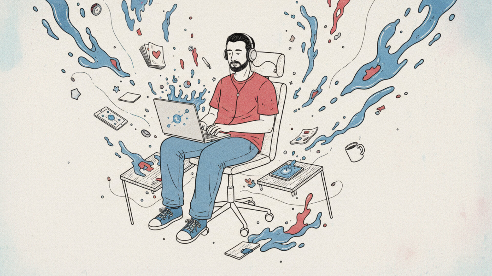

Sobre DonPixelado
DonPixelado nace como un espacio honesto, reflexivo y con humor, donde se exploran experiencias cotidianas, trabajo, creatividad y tecnología. Aquí no encontrarás fórmulas mágicas, solo historias y reflexiones que conectan con nuestra realidad.
Código de Ética
- Nada de humo: no prometer fórmulas ni caminos fáciles la vida es como es.
- Humanidad primero: el algoritmo no dicta el mensaje.
- Ironía con propósito: el sarcasmo es herramienta, no escudo.
- IA sí, pero con alma: usar la tecnología como aliada, no como sustituto de la voz humana.
- Respeto por el lector: no manipular, no forzar la venta, no disfrazar autenticidad con marketing.
- Imperfección bienvenida: no todo debe ser bonito ni tener moraleja.
- Transparencia: si algo se vende o se monetiza, se dice con claridad.
- Creatividad consciente: reír, pensar y sentir pueden coexistir sin ruido ni prisa.
Que es Don Pixelado? 10 pixeles Conéctate: Link Tiktok - Link instagram Ultimo post del Feed de cada red si se puede. Suscripción a newsletter